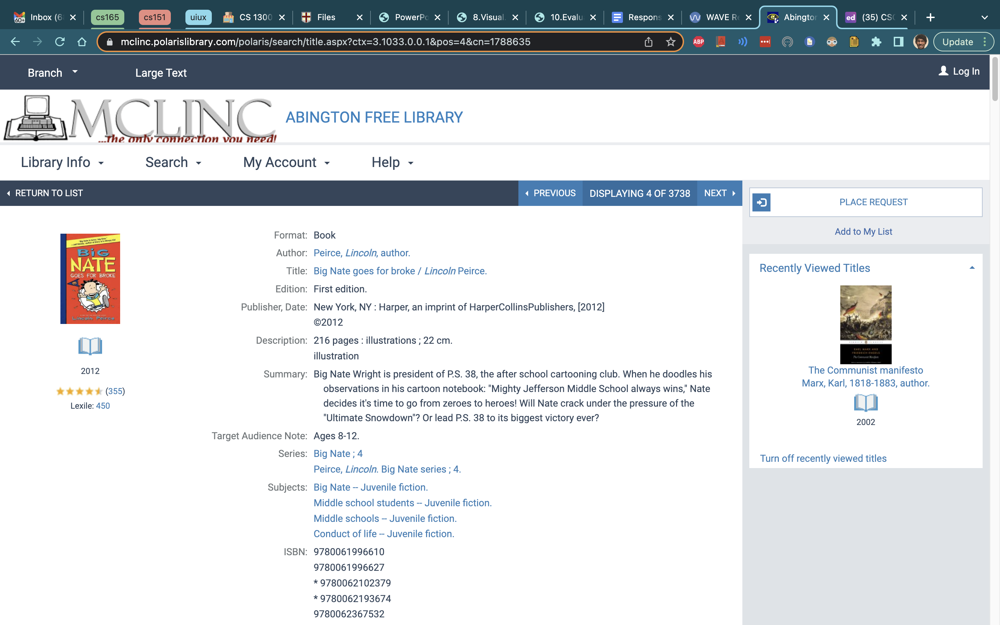
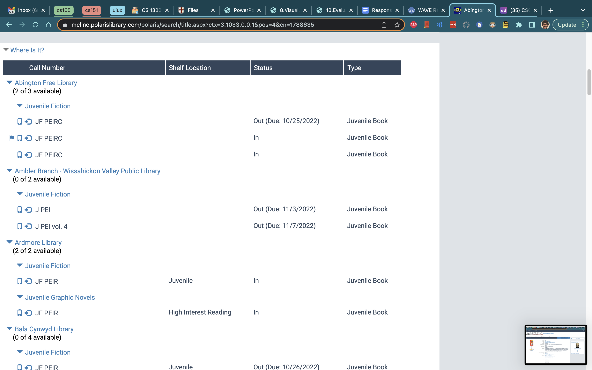

This website shows the process and reasoning behind improving the design of my local Abington Free Library's book checkout webpage. By Morgann Thain. For Brown University, cs1300: UIUX, Project Two: Responsive Redesign.
These prototypes aim to solve the main Usability and Learnability problems very directly. First, the important information about the book--title, author, and picture--are made to be much bigger, while less important elements are smaller and not all shown at once. Instead, you can scroll or click a drop down to access the more detailed information. Second, the main table emphasizes just the information you need on a first look, namely location and availability. I also tried to make if very clear when you can request a book from a certain library by giving a big green button. I decided to put it right next to the availability and location information, and let you easily scroll down that column and only look at ones that have a green button, skipping any empty rows because you know you can't request from there. Finally, to aid in usability and focus, you can order the contents by location, and disclude and libraries than don't have the title you want. Furthermore, if you don't find what you want here, then you can easily search a new title using the search bar at the top.
The desktop version has the most space, so I chose to let it show some of the extra details about the book. I still want the table to be big and readable, so I don't have too many items.
The tablet is similar, but foregoes showing the details and instead lets you click for them so that we can leave the main table in focus.
The phone is similar to the tablet, but I decided to forego the exact availability numbers to maintain clarity and prevent clutter like in the original website.
Zoom into the embed to look at the style guide on the left or, from top to bottom, the individual tablet, desktop, and phone prototypes
Link! In order to see the same page, you need to search up the query again, e.g. "Lincoln, Abraham"
 